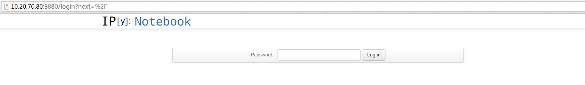

［touch spark］8. 当Ipython Notebook遇见Spark
2015-01-27
注：和本文相关的资料和文件都放到Github上了：ipython-notebook-spark
1. 致谢
首先我忠心地感谢Ipython，Spark的开源作者，真心谢谢你们开发这么方便，好用，功能强大的项目，而且还无私地奉献给大众使用。刚刚很轻松地搭建了一个机遇Ipython Notebook的Spark客户端，真的感受到 The power of technology, the power of open source.
下面是这两个项目的github地址：
同时，这篇文章在刚开始的部分，参考了很多 这篇博客的内容，感谢这么多人能无私分享如此高质量的内容。
但是，这篇文章不是简单记录怎么做，我尽量做到量少质高，所以有些地方会说得比较详细，其中也会提到在解决遇到的问题上的一些方法和思路。
2. 路线规划
基于 Databricks，Zeppelin 和 Hue 的启发，我也想尝试搭建一个丰富可用的在线大数据REPL分析平台，正好用此机会好好实践一下spark，毕竟都学习spark几个月了呢。
不说废话，同使用spark分析微博数据那篇博文一样，我们也要有一个路线规划：
- 搭建一个可多用户使用的，底层接入了spark集群的Ipython Notebook Server；
- 完善 Weibo Message Driver，使用户可在Notebook里获取、分析微博数据，as simple as possible；
- 研究Zeppelin和Hue项目，把其中一个嫁接在Notebook的上层，实现准产品级的大数据实时ETL，Analytic，Sharing平台；这一步可能需要较长时间，可根据自己的时间安排灵活调整；
Dream：在年前完成上面三步，that's really full or chanllenge, but more funny. Anyway, we need dreams, and I can't wait to make this dream into reality.
这篇主要记录我在实现第一步的过程中遇到的主要步骤，遇到的问题和解决方法：搭建一个可多用户使用的，底层接入了spark集群的Ipython Notebook Server。
3. 配置Ipython
3.1: ipython 配置名profile介绍
- profile 命令说明
profile是ipython的一个子命令，其中profile又有两个子命令，分别是create和list，顾名思义，create就是创建一个配置文件，list就是列出当前配置文件。如下：
root@ubuntu2[13:54:01]:~/Desktop#ipython profile
No subcommand specified. Must specify one of: ['create', 'list']
Manage IPython profiles
Profile directories contain configuration, log and security related files and
are named using the convention 'profile_<name>'. By default they are located in
your ipython directory. You can create profiles with `ipython profile create
<name>`, or see the profiles you already have with `ipython profile list`
To get started configuring IPython, simply do:
$> ipython profile create
and IPython will create the default profile in <ipython_dir>/profile_default,
where you can edit ipython_config.py to start configuring IPython.
Subcommands
-----------
Subcommands are launched as `ipython cmd [args]`. For information on using
subcommand 'cmd', do: `ipython cmd -h`.
create
Create an IPython profile by name
list
List available IPython profiles
- profile子命令list说明
本想list命令应该很简单的，和linux下的ls差不多嘛，但我自己看了下，其中还是有些细节值得推敲的。其中这项 Available profiles in /root/.config/ipython: 是说目前有两个配置文件在那个目录下面，pyspark是我自己创建的了。在参考的这篇文章中，作者说创建的配置文件会放到 ~/.ipython/profile_pyspark/ 下，其实这并不是一定的，具体放在哪个目录下面，可以根据profile list的命令来查看。如此看来，我们在这台机器上创建的配置文件应该是放在目录 /root/.config/ipython 下面的。
root@ubuntu2[14:09:12]:~/Desktop#ipython profile list
Available profiles in IPython:
pysh
math
sympy
cluster
The first request for a bundled profile will copy it
into your IPython directory (/root/.config/ipython),
where you can customize it.
Available profiles in /root/.config/ipython:
default
pyspark
To use any of the above profiles, start IPython with:
ipython --profile=<name>
- profile子命令create说明
简单介绍下create子命令的用法。
root@ubuntu2[09:25:57]:~/Desktop#ipython profile help create
Create an IPython profile by name
Create an ipython profile directory by its name or profile directory path.
Profile directories contain configuration, log and security related files and
are named using the convention 'profile_<name>'. By default they are located in
your ipython directory. Once created, you will can edit the configuration files
in the profile directory to configure IPython. Most users will create a profile
directory by name, `ipython profile create myprofile`, which will put the
directory in `<ipython_dir>/profile_myprofile`.
3.2 创建新的Ipython配置文件
- 创建配置文件
因为我之前已经配置过一个pyspark的配置文件了，这里我们创建一个测试用的配置文件，pytest。运行一下命令后，会在 /root/.config/ipython 下生成一个 pytest的目录。
root@ubuntu2[14:54:14]:~/Desktop#ipython profile create pytest
[ProfileCreate] Generating default config file: u'/root/.config/ipython/profile_pytest/ipython_config.py'
[ProfileCreate] Generating default config file: u'/root/.config/ipython/profile_pytest/ipython_notebook_config.py'
root@ubuntu2[15:00:57]:~/Desktop#ls ~/.config/ipython/profile_pytest/
ipython_config.py ipython_notebook_config.py log pid security startup
3.3 编辑配置文件
- 编辑ipython_notebook_config.py
c = get_config()
# about line 15, the ip address the notebook server will listen on. Set it to * means that any IP/Machine which can connect to the server can connect to the notebook server.
c.NotebookApp.ip = '*'
# about line 37, whether to open a browser or not. cause what we want to build is a backend server, so we set it False, no need to open a browser.
c.NotebookApp.open_browser = False
# about line 54, the port which the notebook server will listen on
c.NotebookApp.port = 8880 # or whatever you want, make sure the port is available
设置访问密码
如果你的notebook server是需要访问控制的，简单的话可以设置一个访问密码。听说Ipython 2.x 版本有用户访问控制，这里我还没有接触过，晚点会看看是否有成熟的可用的用户控制方案。- 生成密码文件
这里我们用python自带的密码包生成一个密码，然后再把这个密码重定向到nvpasswd.txt文件里。注意这里重定向的路径哦。 - 编辑配置文件，设置读取密码文件配置项
这里有一个需要注意的，就是PWDFILE的设置，一开始我设置为
~/.config/ipython/profile_pytest/nbpasswd.txt，但是启动ipython notebook server的时候老师报错，说找不到密码文件nbpasswd.txt，很奇怪，明明文件就是在的，可就是提示找不到。无奈我到nbpasswd.txt路径下用 pwd 打印当前路径，显示为root/.config/ipython/profile_pytest/nbpasswd.txt，可是这两个路径应该是一样的啊。无奈之下，死马当作活马医，我就把PWDFILE设置成为root/.config/ipython/profile_pytest/nbpasswd.txt，没想到这样还成功了。关于这点为什么会有效，目前我还不是很清楚，等我请教了公司大神后再补上这一个tip吧。
示例如下：
- 生成密码文件
root@ubuntu2[09:40:29]:~/Desktop#python -c 'from IPython.lib import passwd; print passwd()' > ~/.config/ipython/profile_pytest/nbpasswd.txt
Enter password:
Verify password:
root@ubuntu2[09:43:35]:~/Desktop#vi /root/.config/ipython/profile_pytest/nbpasswd.txt
sha1:c6b748a8e1e2:4688f91ccfb9a8e0afd041ec77cdda99d0e1fb8f
root@ubuntu2[09:49:09]:~/Desktop#vi /root/.config/ipython/profile_pytest/ipython_notebook_config.py
# about line 95
PWDFILE='root/.config/ipython/profile_pytest/nbpasswd.txt'
c.NotebookApp.password = open(PWDFILE).read().strip()
- 设置启动文件
这一步算是比较重要的了，也是我在配置这个notebook server中遇到的比较难解的问题。这里我们首先需要创建一个启动文件，并在启动文件里设置一些spark的启动参数。如下：
root@ubuntu2[09:52:14]:~/Desktop#touch ~/.config/ipython/profile_pytest/startup/00-pytest-setup.py
root@ubuntu2[10:08:44]:~/Desktop#vi ~/.config/ipython/profile_pytest/startup/00-pytest-setup.py
import os
import sys
spark_home = os.environ.get('SPARK_HOME', None)
if not spark_home:
raise ValueError('SPARK_HOME environment variable is not set')
sys.path.insert(0, os.path.join(spark_home, 'python'))
sys.path.insert(0, os.path.join(spark_home, 'python/lib/py4j-0.8.1-src.zip'))
# execfile(os.path.join(spark_home, 'python/pyspark/shell.py'))
上面的启动配置文件也还简单，即拿到spark_home路径，并在系统环境变量path里加上两个路径，然后再执行一个shell.py文件。不过，在保存之前还是先确认下配置文件写对了，比如说你的SPARK_HOME配置对了，并且下面有python这个文件夹，并且python/lib下有py4j-0.8.1这个文件。我在检查的时候就发现我的包版本是py4j-0.8.2.1的，所以还是要改得和自己的包一致才行。
这里得到一个经验，在这种手把手，step by step的教程中，一定要注意版本控制，毕竟各人的机器，操作系统，软件版本等都不可能完全一致，也许在别人机器上能成功，在自己的机器上不成功也是很正常的事情，毕竟细节决定成败啊！所以在我这里，这句我是这样写的： sys.path.insert(0, os.path.join(spark_home, 'python/lib/py4j-0.8.2.1-src.zip'))
注意，上面的最后一行 execfile(os.path.join(spark_home, 'python/pyspark/shell.py')) 被注释掉了，表示在新建或打开一个notebook时并不去执行shell.py这个文件，这个文件是创建SparkContext的，即如果执行改行语句，那在启动notebook时就会初始化一个sc，但这个sc的配置都是写死了的，在spark web UI监控里的appName也是一样的，很不方便。而且考虑到并不是打开一个notebook就要用到spark的资源，所以最好是要用户自己定义sc了。
python/pyspark/shell.py的核心代码：
sc = SparkContext(appName="PySparkShell", pyFiles=add_files)
atexit.register(lambda: sc.stop())
4. Ok，here we go
到这里差不多大功告成了，可以启动notebook server了。不过在启动之前，需要配置两个环境变量参数，同样，这两个环境变量参数在也是根据个人配置而定的。
# for the CDH-installed Spark
export SPARK_HOME='/usr/local/spark-1.2.0-bin-cdh4/'
# this is where you specify all the options you wou
ld normally add after bin/pyspark
export PYSPARK_SUBMIT_ARGS='--master spark://10.21.208.21:7077 --deploy-mode client'
ok，万事具备，只欠东风了。让我们来尝尝鲜吧：
root@ubuntu2[10:40:50]:~/Desktop#ipython notebook --profile=pyspark
2015-02-01 10:40:54.850 [NotebookApp] Using existing profile dir: u'/root/.config/ipython/profile_pyspark'
2015-02-01 10:40:54.858 [NotebookApp] Using MathJax from CDN: http://cdn.mathjax.org/mathjax/latest/MathJax.js
2015-02-01 10:40:54.868 [NotebookApp] CRITICAL | WARNING: The notebook server is listening on all IP addresses and not using encryption. This is not recommended.
2015-02-01 10:40:54.869 [NotebookApp] Serving notebooks from local directory: /root/Desktop
2015-02-01 10:40:54.869 [NotebookApp] The IPython Notebook is running at: http://[all ip addresses on your system]:8880/
2015-02-01 10:40:54.869 [NotebookApp] Use Control-C to stop this server and shut down all kernels (twice to skip confirmation).
在浏览器输入driver:8880即可访问notebook server了，首先会提示输入密码，密码正确后就可以使用了。


5. 总结
下面是简单的步骤总结：
- 建立环境变量配置文件：ipython_notebook_spark.bashrc
export SPARK_HOME="/usr/local/spark-1.2.0-bin-cdh4/"
export PYSPARK_SUBMIT_ARGS="--master spark://10.21.208.21:7077 --deploy-mode client"
- 配置Ipython notebook server
- ipython profile create pyspark
- 编辑ipython_notebook_config.py
- [可选]配置ipython notebook登录密码
- 设置启动文件
- 设置启动脚本
6. 启动脚本和文件
为了方便，都放到Github上了。
扫一扫